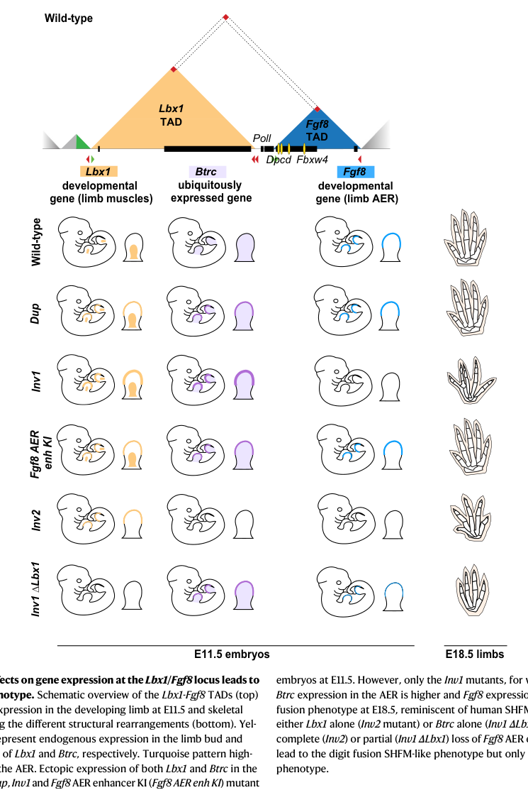

Split hand-foot malformation (SHFM, ectrodactyly) is a genetically and clinically heterogeneous congenital limb malformation characterized by hypoplasia or absence of the central rays of the hands and feet, median ("lobster-claw") clefts, and variable syndactyly, oligodactyly, and aplasia. SHFM may occur as an isolated (non-syndromic) limb defect or as a feature of syndromes such as EEC and ADULT syndrome; this entry models the non-syndromic limb-malformation entity. The shared developmental mechanism is failure to maintain normal apical ectodermal ridge (AER) function during limb development: SHFM-associated genes converge on dysregulation of FGF8 in the central portion of the AER, with disruption of the Wnt-BMP-FGF signaling loop and the p63-DLX5/6 axis. Six classic loci (SHFM1-SHFM6) plus a split-hand/foot with long-bone-deficiency form (SHFLD, BHLHA9) and an X-linked SOX3-associated form have been defined. Inheritance is most often autosomal dominant with reduced penetrance and variable expressivity, with autosomal recessive and X-linked forms also described.
Ask a research question about Split Hand-Foot Malformation. OpenScientist will conduct autonomous deep research using the Disorder Mechanisms Knowledge Base and PubMed literature (typically 10-30 minutes).
Do not include personal health information in your question. Questions and results are cached in your browser's local storage.
name: Split Hand-Foot Malformation
creation_date: "2026-06-08T19:07:49Z"
category: Mendelian
description: >-
Split hand-foot malformation (SHFM, ectrodactyly) is a genetically and
clinically heterogeneous congenital limb malformation characterized by
hypoplasia or absence of the central rays of the hands and feet, median
("lobster-claw") clefts, and variable syndactyly, oligodactyly, and
aplasia. SHFM may occur as an isolated (non-syndromic) limb defect or as a
feature of syndromes such as EEC and ADULT syndrome; this entry models the
non-syndromic limb-malformation entity. The shared developmental mechanism
is failure to maintain normal apical ectodermal ridge (AER) function during
limb development: SHFM-associated genes converge on dysregulation of FGF8 in
the central portion of the AER, with disruption of the Wnt-BMP-FGF signaling
loop and the p63-DLX5/6 axis. Six classic loci (SHFM1-SHFM6) plus a
split-hand/foot with long-bone-deficiency form (SHFLD, BHLHA9) and an
X-linked SOX3-associated form have been defined. Inheritance is most often
autosomal dominant with reduced penetrance and variable expressivity, with
autosomal recessive and X-linked forms also described.
disease_term:
preferred_term: split hand-foot malformation
term:
id: MONDO:0016576
label: split hand-foot malformation
parents:
- limb malformation
- congenital limb malformation
inheritance:
- name: Autosomal dominant
inheritance_term:
preferred_term: Autosomal dominant inheritance
term:
id: HP:0000006
label: Autosomal dominant inheritance
description: >-
Most SHFM loci (SHFM1, SHFM3, SHFM4) are inherited in an autosomal dominant
manner with reduced penetrance and variable expressivity.
evidence:
- reference: PMID:29263051
reference_title: "Microduplications of 10q24 Detected in Two Chinese Patients with Split-hand/foot Malformation Type 3."
supports: SUPPORT
evidence_source: HUMAN_CLINICAL
snippet: "SHFM3 is an autosomal dominant disease, of which the pathogenesis is closely related to the genomic rearrangements at 10q24."
explanation: Documents autosomal dominant inheritance for SHFM3.
- name: Autosomal recessive
inheritance_term:
preferred_term: Autosomal recessive inheritance
term:
id: HP:0000007
label: Autosomal recessive inheritance
description: >-
SHFM6 (WNT10B) follows autosomal recessive inheritance, typically in
consanguineous families.
evidence:
- reference: PMID:31050392
reference_title: "WNT10B variants in split hand/foot malformation: Report of three novel families and review of the literature."
supports: SUPPORT
evidence_source: HUMAN_CLINICAL
snippet: "WNT10B homozygous variants have been recently identified in consanguineous families, but remain still rarely described (SHFM6; MIM225300)."
explanation: Documents autosomal recessive (homozygous WNT10B) inheritance for SHFM6.
- name: X-linked
inheritance_term:
preferred_term: X-linked inheritance
term:
id: HP:0001417
label: X-linked inheritance
description: >-
A rare X-linked form of isolated SHFM is caused by structural variants near
SOX3.
evidence:
- reference: PMID:37216008
reference_title: "A complex structural variant near SOX3 causes X-linked split-hand/foot malformation."
supports: SUPPORT
evidence_source: HUMAN_CLINICAL
snippet: "We describe a family with isolated X-linked SHFM, for which the causative variant could be detected after a diagnostic journey of 20 years."
explanation: Documents an X-linked SHFM family with a SOX3 regulatory variant.
has_subtypes:
- name: SHFM1
display_name: SHFM1 (7q21.3, DLX5/DLX6)
subtype_term:
preferred_term: split hand-foot malformation 1
term:
id: MONDO:0008464
label: split hand-foot malformation 1
description: >-
Autosomal dominant SHFM mapping to 7q21.3, caused by deletions or
chromosomal rearrangements that disrupt the DLX5/DLX6 transcription-factor
genes or their long-range limb enhancers within DYNC1I1. Reduced
penetrance and variable expression are characteristic. Larger 7q21
deletions involving COL1A2 can additionally cause osteogenesis imperfecta.
inheritance:
- name: Autosomal dominant
genes:
- preferred_term: DLX5
term:
id: hgnc:2918
label: DLX5
- preferred_term: DLX6
term:
id: hgnc:2919
label: DLX6
- preferred_term: DYNC1I1
term:
id: hgnc:2963
label: DYNC1I1
evidence:
- reference: PMID:24459211
reference_title: "Next generation sequencing of chromosomal rearrangements in patients with split-hand/split-foot malformation provides evidence for DYNC1I1 exonic enhancers of DLX5/6 expression in humans."
supports: SUPPORT
evidence_source: HUMAN_CLINICAL
snippet: "This separates the DYNC1I1 exons recently identified as limb enhancers in mouse studies from their target genes, DLX5 and DLX6."
explanation: >-
Demonstrates that SHFM1 is caused by disruption of DYNC1I1 exonic
enhancers that drive DLX5/DLX6 expression in the developing limb.
- reference: PMID:38567169
reference_title: "Osteogenesis Imperfecta and Split Foot Malformation due to 7q21.2q21.3 Deletion Including COL1A2, DLX5/6 Genes: Review of the Literature."
supports: SUPPORT
evidence_source: HUMAN_CLINICAL
snippet: "Copy number variation in loss of 7q21 is a genetic disorder characterized by split hand/foot malformation, hearing loss, developmental delay, myoclonus, dystonia, joint laxity, and psychiatric disorders."
explanation: >-
Confirms the 7q21 (SHFM1) deletion region and the DLX5/DLX6, COL1A2 gene
content underlying this subtype.
- name: SHFM3
display_name: SHFM3 (10q24 duplication, BTRC/FBXW4)
subtype_term:
preferred_term: split hand-foot malformation 3
term:
id: MONDO:0009525
label: split hand-foot malformation 3
description: >-
Autosomal dominant SHFM caused by submicroscopic tandem duplications at
10q24, the most common molecularly defined cause of isolated SHFM. The
minimal duplicated region encompasses BTRC and FBXW4 (and neighboring
LBX1, POLL, TLX1); increased BTRC dosage is implicated in the limb defect.
inheritance:
- name: Autosomal dominant
genes:
- preferred_term: BTRC
term:
id: hgnc:1144
label: BTRC
- preferred_term: FBXW4
term:
id: hgnc:10847
label: FBXW4
evidence:
- reference: PMID:29263051
reference_title: "Microduplications of 10q24 Detected in Two Chinese Patients with Split-hand/foot Malformation Type 3."
supports: SUPPORT
evidence_source: HUMAN_CLINICAL
snippet: "SHFM3 is an autosomal dominant disease, of which the pathogenesis is closely related to the genomic rearrangements at 10q24."
explanation: >-
Establishes SHFM3 as an autosomal dominant disorder caused by 10q24
genomic rearrangements (duplications).
- reference: PMID:35908152
reference_title: "Microduplication of BTRC detected in a Chinese family with split hand/foot malformation type 3."
supports: SUPPORT
evidence_source: HUMAN_CLINICAL
snippet: "a 120 kb microduplication containing only BTRC were identified in a Chinese family affected with SHFM3."
explanation: >-
A 120 kb duplication containing only BTRC co-segregated with SHFM3 and
elevated BTRC mRNA, implicating increased BTRC dosage as the cause.
- reference: PMID:36928426
reference_title: "Combinatorial effects on gene expression at the Lbx1/Fgf8 locus resolve split-hand/foot malformation type 3."
supports: SUPPORT
evidence_source: MODEL_ORGANISM
snippet: "This leads to ectopic activation of the Lbx1 and Btrc genes in the apical ectodermal ridge (AER) in an Fgf8-like pattern induced by AER-specific enhancers of Fgf8."
explanation: >-
Transgenic mouse modeling resolves the SHFM3 mechanism: the 10q24
rearrangement restructures chromatin so AER-specific FGF8 enhancers
ectopically activate LBX1/BTRC in the AER.
- name: SHFM4
display_name: SHFM4 (TP63)
subtype_term:
preferred_term: split hand-foot malformation 4
term:
id: MONDO:0011535
label: split hand-foot malformation 4
description: >-
Autosomal dominant SHFM caused by heterozygous variants in TP63 (p63), a
master transcriptional regulator of AER and epidermal development. TP63
variants cause a spectrum from isolated SHFM (SHFM4) to syndromic forms
(EEC, ADULT, AEC syndromes); this subtype refers to the non-syndromic
limb-limited presentation.
inheritance:
- name: Autosomal dominant
genes:
- preferred_term: TP63
term:
id: hgnc:15979
label: TP63
evidence:
- reference: PMID:33294441
reference_title: "A Novel Missense Variant of TP63 Heterozygously Present in Split-Hand/Foot Malformation."
supports: SUPPORT
evidence_source: HUMAN_CLINICAL
snippet: "we identified a novel missense variant (NM_003722.4:c.948G>A; p.Met316Ile) of TP63 in this family that results in a substitution of methionine with isoleucine, which is probably associated with the occurrence of SHFM."
explanation: >-
Reports a heterozygous TP63 missense variant co-segregating with
isolated SHFM, supporting TP63 as a cause of non-syndromic SHFM4.
- name: SHFM5
display_name: SHFM5 (2q31, HOXD cluster / DLX1-DLX2 region)
subtype_term:
preferred_term: split hand-foot malformation 5
term:
id: MONDO:0011709
label: split hand-foot malformation 5
description: >-
SHFM mapping to 2q31, associated with deletions of the region. Although
DLX1/DLX2 lie within the locus, genotype-phenotype analysis indicates that
haploinsufficiency of the adjacent HOXD cluster, rather than DLX1/DLX2,
accounts for the limb (hand/foot) anomalies; 2q31 deletions also produce a
broader microdeletion phenotype with neurodevelopmental features.
genes:
- preferred_term: DLX1
term:
id: hgnc:2914
label: DLX1
- preferred_term: DLX2
term:
id: hgnc:2915
label: DLX2
- preferred_term: HOXD13
term:
id: hgnc:5136
label: HOXD13
evidence:
- reference: PMID:22140379
reference_title: "Refinement of the Region for Split Hand/Foot Malformation 5 on 2q31.1."
supports: SUPPORT
evidence_source: HUMAN_CLINICAL
snippet: "Seven subjects with deletions encompassing the HOXD cluster had hand/foot anomalies of varying severity, including syndactyly, brachydactyly, and ectrodactyly."
explanation: >-
Maps the SHFM5 limb phenotype to 2q31 deletions encompassing the HOXD
cluster.
- reference: PMID:22140379
reference_title: "Refinement of the Region for Split Hand/Foot Malformation 5 on 2q31.1."
supports: PARTIAL
evidence_source: HUMAN_CLINICAL
snippet: "The absence of hand/foot anomalies in any of the individuals with deletions of DLX1/DLX2 but not the HOXD cluster supports the hypothesis that haploinsufficiency of the HOXD cluster, rather than DLX1/DLX2, accounts for the skeletal abnormalities in subjects with 2q31.1 microdeletions."
explanation: >-
Refines the SHFM5 mechanism: HOXD-cluster haploinsufficiency, not
DLX1/DLX2 loss, drives the ectrodactyly in 2q31.1 deletions.
- name: SHFM6
display_name: SHFM6 (WNT10B)
subtype_term:
preferred_term: split hand-foot malformation 6
term:
id: MONDO:0009157
label: split hand-foot malformation 6
description: >-
Autosomal recessive SHFM caused by homozygous loss-of-function variants in
WNT10B, typically in consanguineous families. Feet are usually more
severely affected than hands, with frequent third-fourth finger syndactyly
and, in a minority, polydactyly; heterozygotes may show mild features,
suggesting a dose effect.
inheritance:
- name: Autosomal recessive
genes:
- preferred_term: WNT10B
term:
id: hgnc:12775
label: WNT10B
evidence:
- reference: PMID:31050392
reference_title: "WNT10B variants in split hand/foot malformation: Report of three novel families and review of the literature."
supports: SUPPORT
evidence_source: HUMAN_CLINICAL
snippet: "WNT10B homozygous variants have been recently identified in consanguineous families, but remain still rarely described (SHFM6; MIM225300)."
explanation: >-
Establishes WNT10B homozygous loss-of-function variants as the cause of
autosomal recessive SHFM6.
- reference: PMID:31050392
reference_title: "WNT10B variants in split hand/foot malformation: Report of three novel families and review of the literature."
supports: SUPPORT
evidence_source: HUMAN_CLINICAL
snippet: "heterozygous individuals might have mild features of SHFM, suggesting a dose-effect of the WNT10B loss-of-function."
explanation: >-
Supports a WNT10B dose effect, with mild features in heterozygotes.
- name: SHFLD
display_name: SHFLD (split hand/foot with long-bone deficiency, BHLHA9)
description: >-
Split hand/foot malformation with long-bone deficiency, most commonly
associated with copy-number gains (duplication/triplication) at 17p13.3
that invariably encompass BHLHA9 ("Fingerin"). BHLHA9 is required for AER
formation; its dysregulation causes SHFM/SHFLD via aberrant AER-related
gene expression. The trait shows markedly incomplete penetrance (~50%) and
variable expressivity.
genes:
- preferred_term: BHLHA9
term:
id: hgnc:35126
label: BHLHA9
evidence:
- reference: PMID:28324176
reference_title: "Bhlha9 regulates apical ectodermal ridge formation during limb development."
supports: SUPPORT
evidence_source: MODEL_ORGANISM
snippet: "These observations suggest that Bhlha9 regulates AER formation during limb/finger development by regulating the expression of some AER-formation-related genes and abnormal expression of Bhlha9 leads to SHFM and SHFLD via dysregulation of AER formation and associated gene expression."
explanation: >-
Bhlha9-knockout mice show that BHLHA9 regulates AER formation and that
its dysregulation causes SHFM/SHFLD.
- reference: PMID:36028842
reference_title: "SHFLD3 phenotypes caused by 17p13.3 triplication/ duplication encompassing Fingerin (BHLHA9) invariably."
supports: SUPPORT
evidence_source: HUMAN_CLINICAL
snippet: "Split-hand/ foot malformation with long bone deficiency 3 (SHFLD3) is an extremely rare condition associated with duplications located on 17p13.3, which invariably encompasses the BHLHA9 gene. The disease inherits with variable expressivity and significant incomplete penetrance as high as 50%."
explanation: >-
Confirms 17p13.3 duplications encompassing BHLHA9 as the cause of SHFLD,
with ~50% incomplete penetrance.
- name: X-linked SHFM
display_name: X-linked SHFM (SOX3 regulatory variant)
description: >-
A rare X-linked form of isolated SHFM caused by complex structural
variants near SOX3 that disrupt its regulatory landscape. Like other SHFM
loci, the underlying defect is failure to maintain normal AER function
during limb development.
inheritance:
- name: X-linked
genes:
- preferred_term: SOX3
term:
id: hgnc:11199
label: SOX3
evidence:
- reference: PMID:37216008
reference_title: "A complex structural variant near SOX3 causes X-linked split-hand/foot malformation."
supports: SUPPORT
evidence_source: HUMAN_CLINICAL
snippet: "We describe a family with isolated X-linked SHFM, for which the causative variant could be detected after a diagnostic journey of 20 years."
explanation: >-
Reports a family with isolated X-linked SHFM caused by a complex
structural variant near SOX3.
- name: PRDM1-associated SHFM
display_name: PRDM1-associated SHFM
description: >-
An emerging cause of SHFM associated with de novo or segregating
heterozygous variants in PRDM1, a transcription factor required for limb
development. Functional studies indicate the variants disrupt the
proline/serine-rich and DNA-binding zinc-finger domains and act in a
dominant-negative fashion; PRDM1 directly regulates limb genes including
FGFR1 and DLX5/DLX6, placing it upstream of the shared SHFM pathway.
genes:
- preferred_term: PRDM1
term:
id: hgnc:9346
label: PRDM1
evidence:
- reference: PMID:37083955
reference_title: "PRDM1 DNA-binding zinc finger domain is required for normal limb development and is disrupted in split hand/foot malformation."
supports: SUPPORT
evidence_source: HUMAN_CLINICAL
snippet: "Through whole-exome and targeted sequencing, we detected three novel variants in a gene encoding a transcription factor, PRDM1, that arose de novo in families with SHFM or segregated with the phenotype."
explanation: >-
Identifies PRDM1 as an SHFM gene, with de novo and segregating
heterozygous variants in affected families.
- reference: PMID:37083955
reference_title: "PRDM1 DNA-binding zinc finger domain is required for normal limb development and is disrupted in split hand/foot malformation."
supports: SUPPORT
evidence_source: MODEL_ORGANISM
snippet: "we show that the variants disrupt the proline/serine-rich and DNA-binding zinc finger domains, resulting in a dominant-negative effect."
explanation: >-
Zebrafish rescue experiments show the PRDM1 variants act in a
dominant-negative fashion via disruption of its functional domains.
pathophysiology:
- name: Apical Ectodermal Ridge Maintenance Failure
description: >-
The unifying mechanism across SHFM loci is failure to maintain normal
apical ectodermal ridge (AER) function during limb development. The AER is
the epithelial signaling center at the distal tip of the limb bud that
sustains outgrowth of the underlying mesenchyme. SHFM-associated mutations
converge on dysregulation of FGF8 in the central portion of the AER,
failure of AER stratification, and disruption of reciprocal Wnt-BMP-FGF
signaling between the AER and progress-zone mesenchyme. The central-ray
defect reflects loss of this signaling specifically in the median AER.
locations:
- preferred_term: apical ectodermal ridge
term:
id: UBERON:0004356
label: apical ectodermal ridge
- preferred_term: limb bud
term:
id: UBERON:0004347
label: limb bud
biological_processes:
- preferred_term: apical ectodermal ridge formation
term:
id: GO:1905139
label: apical ectodermal ridge formation
- preferred_term: FGF8 signaling in the AER
term:
id: GO:0008543
label: fibroblast growth factor receptor signaling pathway
modifier: DECREASED
- preferred_term: limb development
term:
id: GO:0060173
label: limb development
modifier: ABNORMAL
evidence:
- reference: PMID:30101460
reference_title: "Genetic regulatory pathways of split-hand/foot malformation."
supports: SUPPORT
evidence_source: HUMAN_CLINICAL
snippet: "Split-hand/foot malformation (SHFM) is caused by mutations in TP63, DLX5, DLX6, FGF8, FGFR1, WNT10B, and BHLHA9."
explanation: >-
Lists the convergent set of SHFM-causing genes that act on a shared AER
regulatory pathway.
- reference: PMID:30101460
reference_title: "Genetic regulatory pathways of split-hand/foot malformation."
supports: SUPPORT
evidence_source: HUMAN_CLINICAL
snippet: "The mutations in SHFM-related genes lead to dysregulation of Fgf8 in the central portion of the apical ectodermal ridge (AER) and subsequently lead to misexpression of a number of downstream target genes, failure of stratification of the AER, and thus SHFM."
explanation: >-
States the core mechanism: central-AER FGF8 dysregulation and failed AER
stratification produce SHFM.
- reference: PMID:37216008
reference_title: "A complex structural variant near SOX3 causes X-linked split-hand/foot malformation."
supports: SUPPORT
evidence_source: HUMAN_CLINICAL
snippet: "SHFM is caused by failure to maintain normal apical ectodermal ridge function during limb development."
explanation: >-
Independent confirmation that the unifying defect is failed AER
maintenance.
downstream:
- target: Disrupted Wnt-BMP-FGF Signaling and Central Ray Loss
causal_link_type: DIRECT
- name: Disrupted Wnt-BMP-FGF Signaling and Central Ray Loss
description: >-
Loss of central-AER FGF8 dysregulates the reciprocal Wnt-BMP-FGF signaling
loop. Disruption of canonical and non-canonical Wnt signaling, together
with altered FGF-BMP-MSX signaling, drives the phenotype: median clefts
with absent or hypoplastic central rays, syndactyly of the remaining
digits (from dysregulated apoptotic cell death), and loss of digit
identity (from misexpression of HOX genes and an abnormal SHH gradient or
loss of GLI3A/GLI3R balance).
locations:
- preferred_term: autopod region
term:
id: UBERON:0002470
label: autopod region
biological_processes:
- preferred_term: Wnt signaling pathway
term:
id: GO:0016055
label: Wnt signaling pathway
modifier: ABNORMAL
- preferred_term: BMP signaling pathway
term:
id: GO:0030509
label: BMP signaling pathway
modifier: ABNORMAL
- preferred_term: regulation of apoptotic process
term:
id: GO:0042981
label: regulation of apoptotic process
modifier: ABNORMAL
- preferred_term: embryonic limb morphogenesis
term:
id: GO:0030326
label: embryonic limb morphogenesis
modifier: ABNORMAL
evidence:
- reference: PMID:30101460
reference_title: "Genetic regulatory pathways of split-hand/foot malformation."
supports: SUPPORT
evidence_source: HUMAN_CLINICAL
snippet: "Disruption of canonical and non-canonical Wnt signaling is involved in the pathogenesis of SHFM."
explanation: >-
Implicates disrupted canonical and non-canonical Wnt signaling in SHFM
pathogenesis.
- reference: PMID:30101460
reference_title: "Genetic regulatory pathways of split-hand/foot malformation."
supports: SUPPORT
evidence_source: HUMAN_CLINICAL
snippet: "Syndactyly of the remaining digits is most likely the effects of dysregulation of Fgf-Bmp-Msx signaling on apoptotic cell death."
explanation: >-
Links syndactyly of remaining digits to dysregulated FGF-BMP-MSX
signaling and altered apoptosis.
- reference: PMID:30101460
reference_title: "Genetic regulatory pathways of split-hand/foot malformation."
supports: SUPPORT
evidence_source: HUMAN_CLINICAL
snippet: "Loss of digit identity in SHFM is hypothesized to be the effects of misexpression of HOX genes, abnormal SHH gradient, or the loss of balance between GLI3A and GLI3R."
explanation: >-
Attributes loss of digit identity to HOX misexpression, abnormal SHH
gradient, and disturbed GLI3A/GLI3R balance.
phenotypes:
- name: Split hand
category: Skeletal
description: >-
Median cleft of the hand with absent or hypoplastic central rays,
producing a lobster-claw appearance.
phenotype_term:
preferred_term: Split hand
term:
id: HP:0001171
label: Split hand
evidence:
- reference: PMID:30101460
reference_title: "Genetic regulatory pathways of split-hand/foot malformation."
supports: SUPPORT
evidence_source: HUMAN_CLINICAL
snippet: "This implies that in normal situations these SHFM-associated genes share an underlying regulatory pathway that is involved in the development of the central parts of the hands and feet."
explanation: >-
Identifies the central hand/foot rays as the developmental territory
affected, the basis of the split-hand phenotype.
- name: Split foot
category: Skeletal
description: >-
Median cleft of the foot with absent or hypoplastic central rays; in many
SHFM forms the feet are more severely affected than the hands.
phenotype_term:
preferred_term: Split foot
term:
id: HP:0001839
label: Split foot
evidence:
- reference: PMID:31050392
reference_title: "WNT10B variants in split hand/foot malformation: Report of three novel families and review of the literature."
supports: SUPPORT
evidence_source: HUMAN_CLINICAL
snippet: "The feet are more severely affected than the hands and there is a frequent asymmetry without obvious side-bias."
explanation: >-
Documents foot involvement and the frequent foot-predominant asymmetry
seen in SHFM (here WNT10B-related SHFM6).
- name: Ectrodactyly
category: Skeletal
description: >-
Absence of one or more central digits with median clefting, the defining
limb defect of SHFM.
phenotype_term:
preferred_term: Ectrodactyly
term:
id: HP:0100257
label: Ectrodactyly
evidence:
- reference: PMID:38567169
reference_title: "Osteogenesis Imperfecta and Split Foot Malformation due to 7q21.2q21.3 Deletion Including COL1A2, DLX5/6 Genes: Review of the Literature."
supports: SUPPORT
evidence_source: HUMAN_CLINICAL
snippet: "We report a Turkish girl with ectrodactyly, joint laxity, multiple bone fractures, blue sclera, early teeth decay, mild learning disability, and depression."
explanation: >-
Documents ectrodactyly as the limb manifestation in a SHFM1 (7q21
deletion) patient.
- name: Syndactyly
category: Skeletal
description: >-
Fusion of remaining digits, frequently affecting the third and fourth
fingers, attributed to dysregulated apoptotic cell death in the
interdigital mesenchyme.
phenotype_term:
preferred_term: Syndactyly
term:
id: HP:0001159
label: Syndactyly
evidence:
- reference: PMID:31050392
reference_title: "WNT10B variants in split hand/foot malformation: Report of three novel families and review of the literature."
supports: SUPPORT
evidence_source: HUMAN_CLINICAL
snippet: "Syndactyly of third-fourth fingers was a frequent finding (62%)."
explanation: >-
Quantifies third-fourth finger syndactyly as a frequent SHFM feature.
frequency: FREQUENT
- name: Polydactyly
category: Skeletal
description: >-
Supernumerary digits, classically described in SHFM6 (WNT10B) though
present in only a minority of patients.
phenotype_term:
preferred_term: Polydactyly
term:
id: HP:0010442
label: Polydactyly
evidence:
- reference: PMID:31050392
reference_title: "WNT10B variants in split hand/foot malformation: Report of three novel families and review of the literature."
supports: SUPPORT
evidence_source: HUMAN_CLINICAL
snippet: "Polydactyly, which was classically described in SHFM6, was only present in 27% of patients."
explanation: >-
Documents polydactyly in a minority (27%) of WNT10B-related SHFM6
patients.
frequency: OCCASIONAL
- name: Sensorineural hearing loss
category: Audiologic
subtype: SHFM1
description: >-
Sensorineural hearing impairment, sometimes with inner-ear malformation,
is an extra-limb feature associated with the SHFM1 (7q21, DLX5/DLX6) locus.
phenotype_term:
preferred_term: Sensorineural hearing impairment
term:
id: HP:0000407
label: Sensorineural hearing impairment
evidence:
- reference: PMID:37628577
reference_title: "Split Hand-Foot and Deafness in a Patient with 7q21.13-q21.3 Deletion Not Including the DLX5/6 Genes."
supports: SUPPORT
evidence_source: HUMAN_CLINICAL
snippet: "we analyzed a patient affected by SHFM1 associated with deafness and an abnormality of the inner ear (incomplete partition type I)"
explanation: >-
Documents sensorineural deafness with inner-ear malformation in an SHFM1
patient with a 7q21 deletion affecting DLX5/6 regulation.
genetic:
- name: SHFM is genetically heterogeneous with a shared AER regulatory pathway
association: Causative
notes: >-
SHFM is caused by mutations across at least seven loci (SHFM1-SHFM6 plus
SHFM/SHFLD) involving TP63, DLX5, DLX6, FGF8, FGFR1, WNT10B, and BHLHA9,
which converge on a single AER regulatory pathway. Inheritance is most
often autosomal dominant with reduced penetrance and variable expression,
with autosomal recessive (WNT10B) and X-linked (SOX3) forms also reported.
evidence:
- reference: PMID:30101460
reference_title: "Genetic regulatory pathways of split-hand/foot malformation."
supports: SUPPORT
evidence_source: HUMAN_CLINICAL
snippet: "The clinical features of SHFM caused by mutations of these genes are not distinguishable."
explanation: >-
Establishes that the multiple SHFM genes produce clinically
indistinguishable phenotypes, consistent with a shared pathway.
- name: BHLHA9 dosage and AER formation
association: Causative
gene_term:
preferred_term: BHLHA9
term:
id: hgnc:35126
label: BHLHA9
notes: >-
BHLHA9 ("Fingerin") regulates AER formation, in part by regulating Trp63
(TP63); copy-number gains at 17p13.3 encompassing BHLHA9 cause SHFM/SHFLD.
evidence:
- reference: PMID:28324176
reference_title: "Bhlha9 regulates apical ectodermal ridge formation during limb development."
supports: SUPPORT
evidence_source: MODEL_ORGANISM
snippet: "some apical ectodermal ridge (AER) formation related genes, including Trp63, exhibited an aberrant expression pattern in the limb bud of Bhlha9-knockout mice; TP63 (Trp63) was regulated by Bhlha9 on the basis of in vitro analysis."
explanation: >-
Places BHLHA9 upstream of TP63 in AER formation, linking it to the
shared SHFM pathway.
treatments:
- name: Reconstructive orthopedic surgery
description: >-
Multi-stage reconstructive and corrective orthopedic surgery is the
mainstay of SHFM management, addressing the cleft, digital deficiency, and
associated long-bone anomalies (e.g., tibial aplasia) to improve hand
function and achieve weight-bearing and ambulation. Management is
individualized and supportive; there is no disease-modifying therapy.
therapeutic_modality: SURGERY
treatment_term:
preferred_term: orthopedic surgical procedure
term:
id: NCIT:C16186
label: Orthopedic Surgical Procedure
evidence:
- reference: PMID:24647283
reference_title: "Reconstruction of bilateral tibial aplasia and split hand-foot syndrome in a father and daughter."
supports: SUPPORT
evidence_source: HUMAN_CLINICAL
snippet: "Reconstruction of these patients required multiple surgical procedures and orthoprosthesis was mandatory."
explanation: >-
Documents multi-stage reconstructive orthopedic surgery as the primary
management approach for SHFM with associated tibial aplasia.
- reference: PMID:24647283
reference_title: "Reconstruction of bilateral tibial aplasia and split hand-foot syndrome in a father and daughter."
supports: SUPPORT
evidence_source: HUMAN_CLINICAL
snippet: "The main goal of treatment was to achieve walking."
explanation: >-
Establishes restoration of ambulation as the functional goal of surgical
management in severe SHFM.
- name: Prosthetics and orthotics
description: >-
Custom prosthetic and orthotic fitting complements surgical reconstruction,
stabilizing deformed limbs and enabling ambulation and use of the affected
hands and feet.
therapeutic_modality: DEVICE
treatment_term:
preferred_term: prosthetic and orthotic fitting
term:
id: NCIT:C15315
label: Rehabilitation
evidence:
- reference: PMID:24647283
reference_title: "Reconstruction of bilateral tibial aplasia and split hand-foot syndrome in a father and daughter."
supports: SUPPORT
evidence_source: HUMAN_CLINICAL
snippet: "walking was achieved with simultaneous designation of orthotic fitting."
explanation: >-
Documents orthotic/prosthetic fitting as an adjunct to surgery that
enabled ambulation in SHFM with tibial aplasia.
- name: Genetic counseling
description: >-
Because SHFM is genetically heterogeneous with autosomal dominant
(often reduced-penetrance), autosomal recessive, and X-linked forms,
molecular diagnosis and genetic counseling inform recurrence-risk
assessment and reproductive decision-making for affected families.
therapeutic_modality: BEHAVIORAL
treatment_term:
preferred_term: genetic counseling
term:
id: MAXO:0000079
label: genetic counseling
evidence:
- reference: PMID:37216008
reference_title: "A complex structural variant near SOX3 causes X-linked split-hand/foot malformation."
supports: SUPPORT
evidence_source: HUMAN_CLINICAL
snippet: "We describe a family with isolated X-linked SHFM, for which the causative variant could be detected after a diagnostic journey of 20 years."
explanation: >-
Illustrates the diagnostic complexity of SHFM that genetic counseling and
molecular testing address, supporting their role in family management.
references:
- reference: PMID:30101460
title: "Genetic regulatory pathways of split-hand/foot malformation."
Scope and evidence note. This report is derived from aggregated, disease-level primary/review literature retrieved via tool-based full-text evidence extraction. Where the user requested OMIM/Orphanet/MONDO/ICD/MeSH identifiers, the current tool context did not include authoritative ontology pages, so those identifiers are not reliably extractable here; the report focuses on evidence-supported definitions, genetics, mechanisms, diagnostics, and recent (2023–2024) advances from the retrieved peer‑reviewed literature. PMIDs were not present in the retrieved text excerpts for most papers; therefore, citations are provided using the available evidence context IDs, and URLs/DOIs and publication dates are included when available.
Split hand-foot malformation (SHFM), also called ectrodactyly, is a congenital limb defect characterized by a median cleft of the hands and/or feet due to absence or hypoplasia of the central rays (central digits). (ambrosetti2023splithandfootand pages 1-2, sowinskaseidler2014splithandfootmalformation pages 1-2)
A commonly cited subtype, SHFM1, maps to the 7q21q22 region and is described as autosomal dominant with incomplete penetrance and variable expressivity, and may be associated with extra-limb features such as hearing loss and craniofacial anomalies. (ambrosetti2023splithandfootand pages 1-2)
Not extractable from the current evidence corpus (no direct OMIM/Orphanet/MONDO/ICD/MeSH records were retrieved in the provided tool context). A genetics-oriented review notes that SHFM loci (SHFM1–6 and SHFM/SHFLD) correspond to OMIM-referenced entities, but does not provide the complete identifier table in the excerpted text. (sowinskaseidler2014splithandfootmalformation pages 1-2)
Evidence here is primarily from: - Aggregated disease-level resources (reviews) (sowinskaseidler2014splithandfootmalformation pages 1-2, umair2019nonsyndromicsplithandfootmalformation pages 1-2) - Individual/family case reports and mechanistic studies with genomic testing and functional follow-up (ambrosetti2023splithandfootand pages 1-2, akimova2024variableclinicalpresentation pages 1-2, ambrosetti2023splithandfootand pages 4-7, truong2023prdm1dnabindingzinc pages 1-2)
SHFM is genetically heterogeneous with causal contributions from: 1. Regulatory structural variants (SVs)/CNVs disrupting limb gene expression domains (7q21 and 10q24 are major examples). (ambrosetti2023splithandfootand pages 1-2, cova2023combinatorialeffectson pages 1-2, cova2023combinatorialeffectson pages 9-11) 2. Single-gene pathogenic variants in limb developmental regulators (e.g., WNT10B; PRDM1; TP63 noted in reviews). (bilal2023sequencevariantsin pages 1-2, truong2023prdm1dnabindingzinc pages 1-2, sowinskaseidler2014splithandfootmalformation pages 1-2)
A review emphasizes that SHFM is “clinically and genetically heterogeneous” and that many cases are linked to chromosomal rearrangements (deletions/duplications/inversions/translocations) while a subset is due to point mutations (TP63, WNT10B, DLX5). (sowinskaseidler2014splithandfootmalformation pages 1-2)
No robust 2023–2024 evidence for environmental or protective factors (or gene–environment interactions) was present in the retrieved corpus. SHFM is predominantly treated as a genetic developmental disorder in these sources. (sowinskaseidler2014splithandfootmalformation pages 1-2, ambrosetti2023splithandfootand pages 1-2)
A primary 2023 report defines SHFM as a “congenital limb defect characterized by a median cleft of the hands and/or feet due to the absence/hypoplasia of the central rays.” (ambrosetti2023splithandfootand pages 1-2)
A 2023 WNT10B paper similarly describes SHFM/ectrodactyly as a rare limb deformity with “median cleft of the hand and foot with impaired or missing central rays.” (bilal2023sequencevariantsin pages 1-2)
Typical manifestations include: - Split/median cleft of hand/foot - Missing or hypoplastic central digits - Syndactyly of remaining digits (ambrosetti2023splithandfootand pages 1-2, bilal2023sequencevariantsin pages 1-2)
A 2024 review/case report of FATCO associated with SHFLD highlights the broader spectrum in which split-hand/foot phenotypes can coexist with long bone anomalies (tibia/fibula/femur), and cites multiple genetic associations (e.g., DLX5; BHLHA9 duplications; 17p13.3 rearrangements) supporting heterogeneity and overlap with reduction defects. (deftereou2024acaseofa pages 11-12)
(terms suggested for knowledge-base annotation; not all terms are explicitly enumerated in the sources) - Split hand: HP:0001171 (suggested) - Split foot: HP:0001839 (suggested) - Ectrodactyly: HP:0001159 (suggested) - Syndactyly: HP:0001159/HP:0006101 (suggested; subtype-specific) - Sensorineural hearing impairment: HP:0000407 (suggested; for SHFM1 spectrum) (ambrosetti2023splithandfootand pages 1-2, ambrosetti2023splithandfootand pages 4-7)
No quantitative QoL instruments (EQ‑5D/SF‑36/PROMIS) were present in the retrieved corpus; however, functional burden is implied by severe limb reduction and need for hearing intervention in syndromic cases. (ambrosetti2023splithandfootand pages 4-7)
A 2023 study reports a 7q21.13–q21.3 deletion that does not include DLX5/DLX6 but removes DYNC1I1 exons 15 and 17, described as exonic enhancers (eExons) of DLX5/DLX6. Reduced DLX5/DLX6 expression was shown in patient-derived lymphoblastoid cells, supporting a regulatory SV mechanism. (ambrosetti2023splithandfootand pages 1-2, ambrosetti2023splithandfootand pages 2-4)
Mechanistic implication: disease can result from disruption of regulatory elements even when the target coding genes remain intact. (ambrosetti2023splithandfootand pages 1-2)
A 2023 Nature Communications paper investigated SHFM3-associated tandem duplications/inversions at the LBX1/FGF8 locus. It reports that engineered duplications/inversions restructure chromatin architecture and produce ectopic activation of Lbx1 and Btrc in the AER driven by AER-specific enhancers of Fgf8. (cova2023combinatorialeffectson pages 1-2, cova2023combinatorialeffectson pages 9-11)
Recent real-world genomics reports show WGS can identify the duplicated segment (e.g., chr10:102,934,495–103,496,555 encompassing BTRC, POLL, FBXW4, LBX1), and mosaic state in an unaffected carrier can explain phenotypic variability. (akimova2024variableclinicalpresentation pages 1-2, akimova2024variableclinicalpresentation pages 2-3)
A 2023 Molecular Syndromology report identified WNT10B variants in two Pakistani families with non-syndromic SHFM, including a novel homozygous missense c.338G>C (p.Gly113Ala) and a homozygous frameshift c.884-896del… (p.Phe295Cysfs*87). (bilal2023sequencevariantsin pages 1-2, bilal2023sequencevariantsin pages 2-5)
A 2023 Disease Models & Mechanisms paper reports three novel heterozygous PRDM1 variants (including de novo alleles) in SHFM families, with zebrafish functional assays indicating variants act “in a dominant-negative fashion due to disruption of the proline/serine and DNA-binding zinc finger domains.” (truong2023prdm1dnabindingzinc pages 2-2, truong2023prdm1dnabindingzinc pages 2-4)
Not extractable from the current evidence corpus (no gnomAD allele frequencies, ClinVar classifications, or epigenetic profiling in patient tissues were included in the excerpts). Mosaicism as a modifier for penetrance is supported in SHFM3 duplication families. (akimova2024variableclinicalpresentation pages 2-3)
No specific environmental, lifestyle, or infectious contributors were identified in the retrieved SHFM corpus; current evidence emphasizes genetic and regulatory mechanisms in limb development. (sowinskaseidler2014splithandfootmalformation pages 1-2)
SHFM is widely interpreted as a consequence of disrupted signaling/regulation in the developing limb, particularly the apical ectodermal ridge (AER) (or analogous structures in model organisms), leading to loss of central rays. A genetics review notes DLX5/DLX6 expression in the AER and their role in maintaining proliferation of medial AER cells. (sowinskaseidler2014splithandfootmalformation pages 1-2)
The 2023 Nature Communications study provides a contemporary mechanistic resolution: SVs at the LBX1/FGF8 locus restructure chromatin domains, enabling AER enhancers normally regulating Fgf8 to activate neighboring genes. Specifically, the study reports ectopic activation of Lbx1 and Btrc in the AER in an “Fgf8-like pattern induced by AER-specific enhancers of Fgf8,” and concludes SHFM3 results from “a combinatorial effect on gene misexpression in the developing limb.” (cova2023combinatorialeffectson pages 1-2, cova2023combinatorialeffectson pages 9-11)
Causal chain (one evidence-backed formulation): 10q24 duplication/inversion → altered TAD boundaries/enhancer–promoter contacts → AER-specific Fgf8 enhancers contact LBX1/BTRC promoters → ectopic AER expression of LBX1/BTRC ± altered FGF8 → AER dysfunction → central-ray absence/split hand-foot phenotype. (cova2023combinatorialeffectson pages 9-11)
Visual evidence (figure-based): the locus/TAD structure and SV consequences are summarized in the retrieved figure panels. (cova2023combinatorialeffectson media 96921fee, cova2023combinatorialeffectson media 2619b58c)
The 2023 DMM study integrates human genetics with zebrafish mechanistic work. It reports that PRDM1 variants have reduced function and act dominantly; CUT&RUN demonstrates that Prdm1a directly binds regulatory sequences of key limb genes, including fgfr1a, dlx5a, dlx6a and smo, and that prdm1a loss alters expression of these pathways, implicating coordinated FGF and SHH signaling in fin/limb patterning. (truong2023prdm1dnabindingzinc pages 9-10, truong2023prdm1dnabindingzinc pages 10-11)
Causal chain (evidence-backed): PRDM1 zinc-finger/proline-serine disruption → impaired DNA binding/cofactor recruitment → dysregulation of fgfr1a/dlx5a/dlx6a and Shh pathway targets (smo) → defective apical fold (AER analog) maintenance and AP patterning → pectoral fin/limb defects consistent with SHFM. (truong2023prdm1dnabindingzinc pages 10-11, truong2023prdm1dnabindingzinc pages 11-12)
A 2023 Genes report provides a clear example of regulatory etiology: deletion of DYNC1I1 eExons 15/17 leads to reduced DLX5/DLX6 expression (to ~40–45% in the proband vs parents) despite intact DLX coding sequence, supporting a position-effect/long-range enhancer mechanism. (ambrosetti2023splithandfootand pages 4-7, ambrosetti2023splithandfootand pages 2-4)
(ontology suggestions; not all terms appear verbatim in sources) - GO Biological Process (examples): limb development; appendage morphogenesis; regulation of epithelial cell proliferation; anterior/posterior pattern specification; regulation of Wnt signaling; regulation of FGF signaling. - Cell Ontology (CL) candidates: apical ectodermal ridge cells (epithelial ridge cells; suggested), limb bud mesenchymal cells (suggested). - UBERON candidates: hand (UBERON:0002398), foot (UBERON:0002399), limb bud (UBERON:0000069), apical ectodermal ridge (suggested).
Not supported in retrieved excerpts.
Not directly addressed in the retrieved excerpts; some recent reports are population-specific family studies (e.g., Pakistani WNT10B families). (bilal2023sequencevariantsin pages 1-2)
Clinical diagnosis is based on characteristic limb morphology (median cleft, missing central rays) and can be identified prenatally by imaging; specific radiographic criteria were not detailed in the retrieved excerpts. (ambrosetti2023splithandfootand pages 1-2)
A 2023 SHFM1 case demonstrates that conventional karyotype and FISH can be normal/negative, while high-resolution SNP array can detect a pathogenic 7q21 deletion affecting enhancers and enabling diagnosis; functional validation used expression testing in patient-derived lymphoblastoid cell lines. (ambrosetti2023splithandfootand pages 4-7, ambrosetti2023splithandfootand pages 2-4)
A 2024 Frontiers in Genetics case report used whole-genome sequencing to identify a 10q24.32 duplication and applied segregation/validation PCR; importantly, it identified a mosaic duplication (~10%) in an unaffected grandmother, explaining variable phenotype. (akimova2024variableclinicalpresentation pages 1-2, akimova2024variableclinicalpresentation pages 2-3)
An Oct 2024 Orphanet Journal of Rare Diseases paper proposes a workflow for single-cell detection of 10q24 duplications for SHFM3 in limited DNA contexts, integrating NGS, SNP array/Karyomapping, whole-genome amplification (MDA/MALBAC), and single-molecule sequencing, aiming to improve accuracy in IVF‑PGT and prenatal diagnosis. (wang2024anovelapproach pages 6-7)
Not systematically enumerated in the retrieved excerpts. Clinically overlapping entities include SHFLD/FATCO and other reduction defect syndromes. (deftereou2024acaseofa pages 11-12)
No cohort-based survival or life expectancy data were present in the retrieved excerpts. Prognosis is primarily functional and depends on severity of limb reduction and associated anomalies (e.g., hearing loss). (ambrosetti2023splithandfootand pages 4-7)
Most limb-directed management (reconstructive hand/foot surgery, prosthetics, occupational therapy) is standard of care for congenital limb differences, but specific surgical outcome datasets were not contained in the retrieved excerpts.
No SHFM-specific interventional clinical trials were identified in the retrieved evidence corpus.
No environmental primary prevention strategies were supported by retrieved evidence. For genetic forms, prevention in practice centers on genetic counseling and reproductive options (e.g., prenatal diagnosis, PGT) supported by recent single-cell CNV diagnostic work and SHFM3 family recurrence reports. (wang2024anovelapproach pages 6-7, singh2025uncoveringthegenetic pages 1-2)
Not addressed in the retrieved excerpts.
CRISPR-engineered duplication/inversion alleles at the Lbx1/Fgf8 locus in mice are used to test chromatin architecture changes and limb phenotypes, directly modeling human SHFM3 SVs. (cova2023combinatorialeffectson pages 1-2, cova2023combinatorialeffectson pages 9-11)
Zebrafish prdm1a mutants (loss-of-function) show pectoral fin defects, and overexpression/rescue assays demonstrate that human SHFM-associated PRDM1 variants fail to rescue, supporting pathogenicity and providing a functional validation platform. (truong2023prdm1dnabindingzinc pages 2-4, truong2023prdm1dnabindingzinc pages 10-11)
| Subtype/Mechanism | Locus/genes | Inheritance/penetrance notes | Key phenotype/extra features | Key 2023-2024 evidence source (citation id) | Publication (journal, date) and URL/DOI |
|---|---|---|---|---|---|
| SHFM1 – 7q21 regulatory/coding defects | 7q21.3; DLX5/DLX6 and long-range enhancers including DYNC1I1 eExons 15/17 | Usually autosomal dominant with incomplete penetrance and variable expressivity; pathogenic mechanism often regulatory (enhancer deletion/separation) rather than coding loss alone (ambrosetti2023splithandfootand pages 1-2, ambrosetti2023splithandfootand pages 7-8, sowinskaseidler2023agenotype–phenotypecorrelation pages 13-13) | Median cleft/split hand-foot; may include hearing loss (~35% in SHFM1 context), inner-ear anomalies, craniofacial anomalies, developmental delay in some rearrangements (ambrosetti2023splithandfootand pages 1-2, ambrosetti2023splithandfootand pages 4-7) | (ambrosetti2023splithandfootand pages 1-2, ambrosetti2023splithandfootand pages 2-4, sowinskaseidler2023agenotype–phenotypecorrelation pages 13-13) | Genes (26 Jul 2023): Ambrosetti et al., Split hand-foot and deafness in a patient with 7q21.13-q21.3 deletion not including the DLX5/6 genes. https://doi.org/10.3390/genes14081526 ; Frontiers in Molecular Biosciences (Oct 2023): Sowińska-Seidler et al. https://doi.org/10.3389/fmolb.2023.1250714 |
| SHFM3 – 10q24 structural-variant mechanism | 10q24.31-q24.32; LBX1, BTRC, FBXW4, POLL with altered regulation of the LBX1/FGF8 locus and AER enhancers in FBXW4/Fgf8 domain | Usually autosomal dominant; marked variable expressivity and reduced penetrance; mosaicism documented in unaffected/less affected carriers; mechanism is chromatin/TAD rewiring by duplication or inversion (akimova2024variableclinicalpresentation pages 1-2, akimova2024variableclinicalpresentation pages 2-3, cova2023combinatorialeffectson pages 1-2, cova2023combinatorialeffectson pages 9-11) | Split hand/foot with central-ray deficiency; severity ranges from mild SHFM to severe limb deficiencies; some families show syndromic features (hearing/renal/craniofacial) depending on rearrangement extent (dimitrov2010distallimbdeficiencies pages 9-11, akimova2024variableclinicalpresentation pages 1-2) | (cova2023combinatorialeffectson pages 1-2, cova2023combinatorialeffectson pages 9-11, akimova2024variableclinicalpresentation pages 1-2) | Nature Communications (Mar 2023): Cova et al., Combinatorial effects on gene expression at the Lbx1/Fgf8 locus resolve split-hand/foot malformation type 3. https://doi.org/10.1038/s41467-023-37057-z ; Frontiers in Genetics (05 Jan 2024): Akimova et al. https://doi.org/10.3389/fgene.2023.1303807 ; Orphanet Journal of Rare Diseases (Oct 2024): Wang et al. https://doi.org/10.1186/s13023-024-03386-5 |
| SHFM4 – TP63-related | 3q28; TP63 | Typically autosomal dominant; incomplete penetrance documented; variable intrafamilial expression (sowinskaseidler2014splithandfootmalformation pages 1-2) | Isolated or syndromic ectrodactyly; classic central-ray absence/hypoplasia, sometimes with ectodermal findings depending on allele/syndrome context (sowinskaseidler2014splithandfootmalformation pages 1-2) | (sowinskaseidler2014splithandfootmalformation pages 1-2) | Journal of Applied Genetics (Oct 2014): Sowińska-Seidler et al., diagnostic/genetic overview including SHFM4. https://doi.org/10.1007/s13353-013-0178-5 |
| SHFM6 – WNT10B-related | 12q13.12; WNT10B | Autosomal recessive; usually homozygous variants in consanguineous or multiplex families (bilal2023sequencevariantsin pages 1-2, bilal2023sequencevariantsin pages 2-5, umair2019nonsyndromicsplithandfootmalformation pages 7-8) | Non-syndromic SHFM with median clefts, missing central digits, complex syndactyly; some reports note dental anomalies/oligodontia and broader phenotypic variability (bilal2023sequencevariantsin pages 1-2, umair2019nonsyndromicsplithandfootmalformation pages 7-8) | (bilal2023sequencevariantsin pages 1-2, bilal2023sequencevariantsin pages 2-5) | Molecular Syndromology (20 Jun 2023): Bilal et al., Sequence variants in the WNT10B underlying non-syndromic split-hand/foot malformation. https://doi.org/10.1159/000531069 |
| PRDM1 – newly implicated monogenic SHFM gene | PRDM1 (BLIMP1); limb regulatory targets include fgfr1a, dlx5a, dlx6a, smo in zebrafish fin/limb models | Appears heterozygous with dominant-negative mechanism; incomplete penetrance/variable expressivity reported in families (truong2023prdm1dnabindingzinc pages 9-10, truong2023prdm1dnabindingzinc pages 11-12, truong2023prdm1dnabindingzinc pages 2-2) | SHFM with disruption of fin/limb induction, outgrowth, and AP patterning pathways; functional assays show failure to rescue fin defects and altered AER/AF-related gene regulation (truong2023prdm1dnabindingzinc pages 9-10, truong2023prdm1dnabindingzinc pages 1-2, truong2023prdm1dnabindingzinc pages 2-2) | (truong2023prdm1dnabindingzinc pages 9-10, truong2023prdm1dnabindingzinc pages 1-2, truong2023prdm1dnabindingzinc pages 2-2) | Disease Models & Mechanisms (Apr 2023): Truong et al., PRDM1 DNA-binding zinc finger domain is required for normal limb development and is disrupted in split hand/foot malformation. https://doi.org/10.1242/dmm.049977 |
Table: This table summarizes the main SHFM loci and mechanisms most relevant for disease knowledge-base curation, emphasizing the best-supported 2023-2024 evidence for regulatory, structural-variant, and monogenic causes.
A locus schematic and model summarizing SHFM3 structural variants, TAD reorganization, and AER misexpression of Lbx1/Btrc were retrieved from the 2023 Nature Communications study (Cova et al.). (cova2023combinatorialeffectson media 96921fee, cova2023combinatorialeffectson media 2619b58c)
References
(ambrosetti2023splithandfootand pages 1-2): Irene Ambrosetti, Laura Bernardini, Marzia Pollazzon, Maria Grazia Giuffrida, Valentina Guida, Francesca Peluso, Maria Chiara Baroni, Valeria Polizzi, Manuela Napoli, Simonetta Rosato, Gabriele Trimarchi, Chiara Gelmini, Stefano Giuseppe Caraffi, Anita Wischmeijer, Daniele Frattini, Antonio Novelli, and Livia Garavelli. Split hand-foot and deafness in a patient with 7q21.13-q21.3 deletion not including the dlx5/6 genes. Genes, 14:1526, Jul 2023. URL: https://doi.org/10.3390/genes14081526, doi:10.3390/genes14081526. This article has 5 citations.
(sowinskaseidler2014splithandfootmalformation pages 1-2): Anna Sowińska-Seidler, Magdalena Socha, and Aleksander Jamsheer. Split-hand/foot malformation - molecular cause and implications in genetic counseling. Journal of Applied Genetics, 55:105-115, Oct 2014. URL: https://doi.org/10.1007/s13353-013-0178-5, doi:10.1007/s13353-013-0178-5. This article has 110 citations and is from a peer-reviewed journal.
(bilal2023sequencevariantsin pages 1-2): Muhammad Bilal, Tobias B. Haack, Rebecca Buchert, Susana Peralta, Imtiaz Ahmad, Faisal, Sanaullah Abbasi, and Wasim Ahmad. Sequence variants in the wnt10b underlying non-syndromic split-hand/foot malformation. Molecular Syndromology, 14:469-476, Jun 2023. URL: https://doi.org/10.1159/000531069, doi:10.1159/000531069. This article has 3 citations and is from a peer-reviewed journal.
(cova2023combinatorialeffectson pages 1-2): Giulia Cova, Juliane Glaser, Robert Schöpflin, Cesar Augusto Prada-Medina, Salaheddine Ali, Martin Franke, Rita Falcone, Miriam Federer, Emanuela Ponzi, Romina Ficarella, Francesca Novara, Lars Wittler, Bernd Timmermann, Mattia Gentile, Orsetta Zuffardi, Malte Spielmann, and Stefan Mundlos. Combinatorial effects on gene expression at the lbx1/fgf8 locus resolve split-hand/foot malformation type 3. Nature Communications, Mar 2023. URL: https://doi.org/10.1038/s41467-023-37057-z, doi:10.1038/s41467-023-37057-z. This article has 32 citations and is from a highest quality peer-reviewed journal.
(deftereou2024acaseofa pages 11-12): Theodora- Eleftheria Deftereou, Vaya R Karapepera, Christina Angelika Alexiadi, Stylianos Tologkos, Vasiliki Papadatou, Georgios Alexiadis, Dimitrios Karamanidis, and Lambropoulou Maria. A case of fibular aplasia-tibial campomelia-oligosyndactyly (fatco) syndrome associated with split hand/foot syndrome with long bone deficiency (shfld) and review of the literature. Cureus, Jul 2024. URL: https://doi.org/10.7759/cureus.65162, doi:10.7759/cureus.65162. This article has 0 citations.
(umair2019nonsyndromicsplithandfootmalformation pages 1-2): Muhammad Umair and Amir Hayat. Nonsyndromic split-hand/foot malformation: recent classification. Molecular Syndromology, 10:243-254, Sep 2019. URL: https://doi.org/10.1159/000502784, doi:10.1159/000502784. This article has 42 citations and is from a peer-reviewed journal.
(akimova2024variableclinicalpresentation pages 1-2): Daria Akimova, Tatiana Markova, Maria Ampleeva, and Mikhail Skoblov. Variable clinical presentation of split hand/foot malformation syndrome in a family with microduplication of 10q24.32: a case report. Frontiers in Genetics, Jan 2024. URL: https://doi.org/10.3389/fgene.2023.1303807, doi:10.3389/fgene.2023.1303807. This article has 2 citations and is from a peer-reviewed journal.
(ambrosetti2023splithandfootand pages 4-7): Irene Ambrosetti, Laura Bernardini, Marzia Pollazzon, Maria Grazia Giuffrida, Valentina Guida, Francesca Peluso, Maria Chiara Baroni, Valeria Polizzi, Manuela Napoli, Simonetta Rosato, Gabriele Trimarchi, Chiara Gelmini, Stefano Giuseppe Caraffi, Anita Wischmeijer, Daniele Frattini, Antonio Novelli, and Livia Garavelli. Split hand-foot and deafness in a patient with 7q21.13-q21.3 deletion not including the dlx5/6 genes. Genes, 14:1526, Jul 2023. URL: https://doi.org/10.3390/genes14081526, doi:10.3390/genes14081526. This article has 5 citations.
(truong2023prdm1dnabindingzinc pages 1-2): Brittany T. Truong, Lomeli C. Shull, Ezra Lencer, Eric G. Bend, Michael Field, Elizabeth E. Blue, Michael J. Bamshad, Cindy Skinner, David Everman, Charles E. Schwartz, Heather Flanagan-Steet, and Kristin B. Artinger. Prdm1 dna-binding zinc finger domain is required for normal limb development and is disrupted in split hand/foot malformation. Apr 2023. URL: https://doi.org/10.1242/dmm.049977, doi:10.1242/dmm.049977. This article has 9 citations and is from a domain leading peer-reviewed journal.
(cova2023combinatorialeffectson pages 9-11): Giulia Cova, Juliane Glaser, Robert Schöpflin, Cesar Augusto Prada-Medina, Salaheddine Ali, Martin Franke, Rita Falcone, Miriam Federer, Emanuela Ponzi, Romina Ficarella, Francesca Novara, Lars Wittler, Bernd Timmermann, Mattia Gentile, Orsetta Zuffardi, Malte Spielmann, and Stefan Mundlos. Combinatorial effects on gene expression at the lbx1/fgf8 locus resolve split-hand/foot malformation type 3. Nature Communications, Mar 2023. URL: https://doi.org/10.1038/s41467-023-37057-z, doi:10.1038/s41467-023-37057-z. This article has 32 citations and is from a highest quality peer-reviewed journal.
(ambrosetti2023splithandfootand pages 2-4): Irene Ambrosetti, Laura Bernardini, Marzia Pollazzon, Maria Grazia Giuffrida, Valentina Guida, Francesca Peluso, Maria Chiara Baroni, Valeria Polizzi, Manuela Napoli, Simonetta Rosato, Gabriele Trimarchi, Chiara Gelmini, Stefano Giuseppe Caraffi, Anita Wischmeijer, Daniele Frattini, Antonio Novelli, and Livia Garavelli. Split hand-foot and deafness in a patient with 7q21.13-q21.3 deletion not including the dlx5/6 genes. Genes, 14:1526, Jul 2023. URL: https://doi.org/10.3390/genes14081526, doi:10.3390/genes14081526. This article has 5 citations.
(sowinskaseidler2023agenotype–phenotypecorrelation pages 13-13): Anna Sowińska-Seidler, Magdalena Socha, Anna Szoszkiewicz, Anna Materna-Kiryluk, and Aleksander Jamsheer. A genotype–phenotype correlation in split-hand/foot malformation type 1: further refinement of the phenotypic subregions within the 7q21.3 locus. Frontiers in Molecular Biosciences, Oct 2023. URL: https://doi.org/10.3389/fmolb.2023.1250714, doi:10.3389/fmolb.2023.1250714. This article has 3 citations.
(cova2023combinatorialeffectson pages 2-3): Giulia Cova, Juliane Glaser, Robert Schöpflin, Cesar Augusto Prada-Medina, Salaheddine Ali, Martin Franke, Rita Falcone, Miriam Federer, Emanuela Ponzi, Romina Ficarella, Francesca Novara, Lars Wittler, Bernd Timmermann, Mattia Gentile, Orsetta Zuffardi, Malte Spielmann, and Stefan Mundlos. Combinatorial effects on gene expression at the lbx1/fgf8 locus resolve split-hand/foot malformation type 3. Nature Communications, Mar 2023. URL: https://doi.org/10.1038/s41467-023-37057-z, doi:10.1038/s41467-023-37057-z. This article has 32 citations and is from a highest quality peer-reviewed journal.
(bilal2023sequencevariantsin pages 2-5): Muhammad Bilal, Tobias B. Haack, Rebecca Buchert, Susana Peralta, Imtiaz Ahmad, Faisal, Sanaullah Abbasi, and Wasim Ahmad. Sequence variants in the wnt10b underlying non-syndromic split-hand/foot malformation. Molecular Syndromology, 14:469-476, Jun 2023. URL: https://doi.org/10.1159/000531069, doi:10.1159/000531069. This article has 3 citations and is from a peer-reviewed journal.
(truong2023prdm1dnabindingzinc pages 2-2): Brittany T. Truong, Lomeli C. Shull, Ezra Lencer, Eric G. Bend, Michael Field, Elizabeth E. Blue, Michael J. Bamshad, Cindy Skinner, David Everman, Charles E. Schwartz, Heather Flanagan-Steet, and Kristin B. Artinger. Prdm1 dna-binding zinc finger domain is required for normal limb development and is disrupted in split hand/foot malformation. Apr 2023. URL: https://doi.org/10.1242/dmm.049977, doi:10.1242/dmm.049977. This article has 9 citations and is from a domain leading peer-reviewed journal.
(akimova2024variableclinicalpresentation pages 2-3): Daria Akimova, Tatiana Markova, Maria Ampleeva, and Mikhail Skoblov. Variable clinical presentation of split hand/foot malformation syndrome in a family with microduplication of 10q24.32: a case report. Frontiers in Genetics, Jan 2024. URL: https://doi.org/10.3389/fgene.2023.1303807, doi:10.3389/fgene.2023.1303807. This article has 2 citations and is from a peer-reviewed journal.
(truong2023prdm1dnabindingzinc pages 2-4): Brittany T. Truong, Lomeli C. Shull, Ezra Lencer, Eric G. Bend, Michael Field, Elizabeth E. Blue, Michael J. Bamshad, Cindy Skinner, David Everman, Charles E. Schwartz, Heather Flanagan-Steet, and Kristin B. Artinger. Prdm1 dna-binding zinc finger domain is required for normal limb development and is disrupted in split hand/foot malformation. Apr 2023. URL: https://doi.org/10.1242/dmm.049977, doi:10.1242/dmm.049977. This article has 9 citations and is from a domain leading peer-reviewed journal.
(cova2023combinatorialeffectson media 96921fee): Giulia Cova, Juliane Glaser, Robert Schöpflin, Cesar Augusto Prada-Medina, Salaheddine Ali, Martin Franke, Rita Falcone, Miriam Federer, Emanuela Ponzi, Romina Ficarella, Francesca Novara, Lars Wittler, Bernd Timmermann, Mattia Gentile, Orsetta Zuffardi, Malte Spielmann, and Stefan Mundlos. Combinatorial effects on gene expression at the lbx1/fgf8 locus resolve split-hand/foot malformation type 3. Nature Communications, Mar 2023. URL: https://doi.org/10.1038/s41467-023-37057-z, doi:10.1038/s41467-023-37057-z. This article has 32 citations and is from a highest quality peer-reviewed journal.
(cova2023combinatorialeffectson media 2619b58c): Giulia Cova, Juliane Glaser, Robert Schöpflin, Cesar Augusto Prada-Medina, Salaheddine Ali, Martin Franke, Rita Falcone, Miriam Federer, Emanuela Ponzi, Romina Ficarella, Francesca Novara, Lars Wittler, Bernd Timmermann, Mattia Gentile, Orsetta Zuffardi, Malte Spielmann, and Stefan Mundlos. Combinatorial effects on gene expression at the lbx1/fgf8 locus resolve split-hand/foot malformation type 3. Nature Communications, Mar 2023. URL: https://doi.org/10.1038/s41467-023-37057-z, doi:10.1038/s41467-023-37057-z. This article has 32 citations and is from a highest quality peer-reviewed journal.
(truong2023prdm1dnabindingzinc pages 9-10): Brittany T. Truong, Lomeli C. Shull, Ezra Lencer, Eric G. Bend, Michael Field, Elizabeth E. Blue, Michael J. Bamshad, Cindy Skinner, David Everman, Charles E. Schwartz, Heather Flanagan-Steet, and Kristin B. Artinger. Prdm1 dna-binding zinc finger domain is required for normal limb development and is disrupted in split hand/foot malformation. Apr 2023. URL: https://doi.org/10.1242/dmm.049977, doi:10.1242/dmm.049977. This article has 9 citations and is from a domain leading peer-reviewed journal.
(truong2023prdm1dnabindingzinc pages 10-11): Brittany T. Truong, Lomeli C. Shull, Ezra Lencer, Eric G. Bend, Michael Field, Elizabeth E. Blue, Michael J. Bamshad, Cindy Skinner, David Everman, Charles E. Schwartz, Heather Flanagan-Steet, and Kristin B. Artinger. Prdm1 dna-binding zinc finger domain is required for normal limb development and is disrupted in split hand/foot malformation. Apr 2023. URL: https://doi.org/10.1242/dmm.049977, doi:10.1242/dmm.049977. This article has 9 citations and is from a domain leading peer-reviewed journal.
(truong2023prdm1dnabindingzinc pages 11-12): Brittany T. Truong, Lomeli C. Shull, Ezra Lencer, Eric G. Bend, Michael Field, Elizabeth E. Blue, Michael J. Bamshad, Cindy Skinner, David Everman, Charles E. Schwartz, Heather Flanagan-Steet, and Kristin B. Artinger. Prdm1 dna-binding zinc finger domain is required for normal limb development and is disrupted in split hand/foot malformation. Apr 2023. URL: https://doi.org/10.1242/dmm.049977, doi:10.1242/dmm.049977. This article has 9 citations and is from a domain leading peer-reviewed journal.
(wang2024anovelapproach pages 6-7): Yaqian Wang, Yang Li, Lidong Zeng, Wenbo Li, Xin Dong, Jia Guo, Xiangrui Meng, Jiacheng Lu, and Jiawei Xu. A novel approach to detecting microduplication in split hand/foot malformation type 3 at the single-cell level: shfm as a case study. Orphanet Journal of Rare Diseases, Oct 2024. URL: https://doi.org/10.1186/s13023-024-03386-5, doi:10.1186/s13023-024-03386-5. This article has 0 citations and is from a peer-reviewed journal.
(singh2025uncoveringthegenetic pages 1-2): Arati Singh, Gayatri Nerakh, and Shagun Aggarwal. Uncovering the genetic basis of recurrent split hand/foot malformation: a case report and review. Journal of Fetal Medicine, 12:130-133, Sep 2025. URL: https://doi.org/10.1055/s-0045-1814130, doi:10.1055/s-0045-1814130. This article has 0 citations.
(ambrosetti2023splithandfootand pages 7-8): Irene Ambrosetti, Laura Bernardini, Marzia Pollazzon, Maria Grazia Giuffrida, Valentina Guida, Francesca Peluso, Maria Chiara Baroni, Valeria Polizzi, Manuela Napoli, Simonetta Rosato, Gabriele Trimarchi, Chiara Gelmini, Stefano Giuseppe Caraffi, Anita Wischmeijer, Daniele Frattini, Antonio Novelli, and Livia Garavelli. Split hand-foot and deafness in a patient with 7q21.13-q21.3 deletion not including the dlx5/6 genes. Genes, 14:1526, Jul 2023. URL: https://doi.org/10.3390/genes14081526, doi:10.3390/genes14081526. This article has 5 citations.
(dimitrov2010distallimbdeficiencies pages 9-11): B. Dimitrov, T. de Ravel, J. Van Driessche, C. D. de Die-Smulders, A. Toutain, J. Vermeesch, J. Fryns, K. Devriendt, and P. Debeer. Distal limb deficiencies, micrognathia syndrome, and syndromic forms of split hand foot malformation (shfm) are caused by chromosome 10q genomic rearrangements. Jul 2010. URL: https://doi.org/10.1136/jmg.2008.065888, doi:10.1136/jmg.2008.065888. This article has 43 citations and is from a domain leading peer-reviewed journal.
(umair2019nonsyndromicsplithandfootmalformation pages 7-8): Muhammad Umair and Amir Hayat. Nonsyndromic split-hand/foot malformation: recent classification. Molecular Syndromology, 10:243-254, Sep 2019. URL: https://doi.org/10.1159/000502784, doi:10.1159/000502784. This article has 42 citations and is from a peer-reviewed journal.
